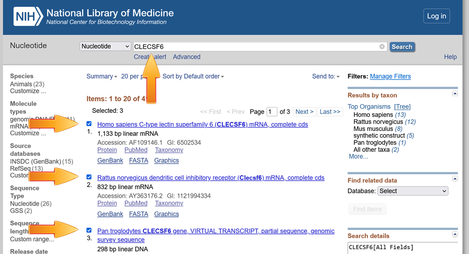
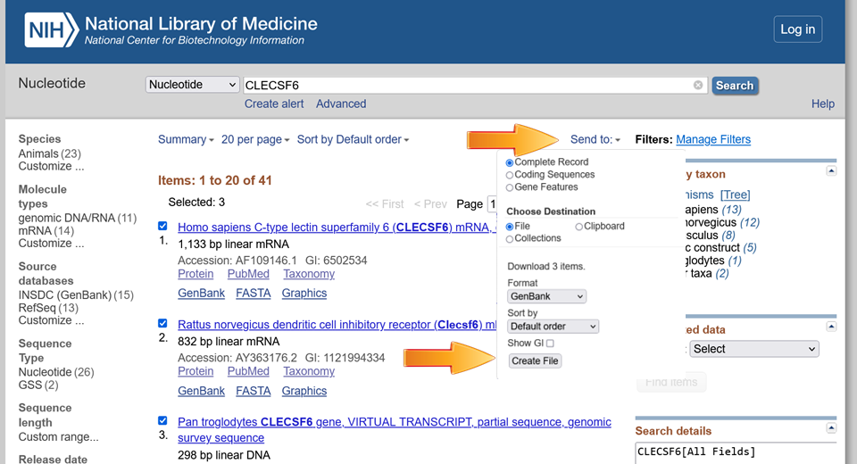

If you want to download a list of
GenBank formatted files that contain your cDNAs,
one way to do it is with NCBI's
nucleotide
browser.
Below is a simple way to do it in two steps
1. Fill in keywords or ID numbers, press Search, and select your
genes of interest

2.
Next, select Send To
and select Complete Record and File, then press Create File

That's all. You are now ready to create cDNA
Primers